Pokédex / #328
Trapinch #328
Ground
It lives in arid deserts. It makes a sloping pit trap in sand where it patiently awaits prey.
Generation 3 · Hoenn
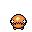
Stats
| Attack | 100 | |
|---|---|---|
| Defense | 45 | |
| Sp. Atk | 45 | |
| Sp. Def | 45 |
In the wild
| Wild level | 20–30 |
|---|---|
| HP | 45 |
| Experience | 5 |
| Egg groups | Bug |
Evolution
- Evolves into Vibrava at level 35.
Moves
| Level | Move | Type | Category | Power | Energy | Cooldown | Effect | |
|---|---|---|---|---|---|---|---|---|
| 1 | Tackle | Normal | Physical | 15 | 15 | 1s | Tackle is one of the most common and basic moves a Pokemon learns. It deals damage with no additional effects. | |
| 1 | Sand-Attack | Ground | Status | – | 25 | 10s | Sand-Attack lowers the target's Accuracy by one stage. | |
| 1 | Bite | Dark | Physical | 60 | 60 | 9s | Bite deals damage and has a 30% chance of causing the target to flinch. | |
| 1 | Faint Attack | Dark | Physical | 60 | 60 | 9s | Faint Attack deals damage and ignores changes to the Accuracy and Evasion stats. | |
| 1 | Bide | Normal | Physical | – | 200 | 30s | The user of Bide 'stores energy' for 2 turns. At the end of the second turn the Pokemon 'unleashes energy', dealing twice the HP damage it received. | |
| 5 | 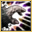 | Mud-Slap | Ground | Special | 20 | 30 | 10s | Mud-Slap deals damage and lowers the target's Accuracy by one stage. |
| 8 | 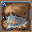 | Bulldoze | Ground | Physical | 60 | 70 | 18s | The user strikes everything around it by stomping down on the ground. This lowers the Speed stat of those hit. |
| 12 | Sand Tomb | Ground | Physical | 7 | 45 | 15s | Sand Tomb inflicts damage, hiting the target 5 times per use and lower the Speed of the target by two stages. | |
| 15 | 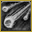 | Rock Slide | Rock | Physical | 38 | 85 | 17s | Rock Slide deals damage and has a 30% chance of causing the target to flinch. |
| 19 | 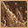 | Dig | Ground | Physical | 80 | 100 | 20s | Dig does damage and has no secondary effect. |
| 22 | Crunch | Dark | Physical | 80 | 80 | 12s | Crunch deals damage and has a 20% chance of lowering the target's Defense by one stage. | |
| 26 | 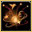 | Earth Power | Ground | Special | 9 | 100 | 21s | Earth Power deals damage and has a 10% chance of lowering the target's Special Defense by one stage. |
| 29 | Feint | Normal | Physical | 30 | 30 | 5s | Feint hits through moves such as Protect or Detect and lifts their effect. It has a short cooldown. | |
| 33 | 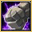 | Earthquake | Ground | Physical | 50 | 110 | 23s | Earthquake deals damage. |
| 36 | 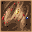 | Sandstorm | Rock | Status | – | 90 | 90s | A five-turn sandstorm is summoned to hurt all combatants except the Rock, Ground, and Steel types. It raises the Sp. Def stat of Rock types. |
| 40 | Superpower | Fighting | Physical | 120 | 120 | 20s | Superpower deals damage but lowers the user's Attack and Defense by one stage each after attacking. | |
| 43 | 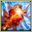 | Hyper Beam | Normal | Special | 150 | 160 | 34s | Hyper Beam deals damage but the user can't attack on the next turn. |
| 47 | Fissure | Ground | Physical | 110 | 110 | 17s | Fissure deals damage and has no secondary effect. |
Field abilities
StrengthRock Slide
Special abilities
Arena TrapHyper Cutter
Egg moves
Bug BiteEndureFlailFocus EnergyFury CutterGustMud ShotQuick AttackSignal Beam
Technical machines
Double TeamEarthquakeHyper BeamProtectRestRock SlideRock TombSandstormSolar BeamSubstituteToxic
Drops
| Item | Amount | Chance | |
|---|---|---|---|
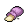 | sandbag | 1 | 13.3% |
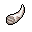 | horn | 1 | 10.7% |
| cutting fang | 1 | 3.2% | |
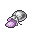 | rare sandbag | 1 | 2.29% |
| clay lump | 1 | 2.29% | |
| trapinch doll | 1 | 0.1% | |
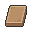 | Earth Plate | 1 | 0.002% |
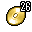 | TM 26 | 1 | 0.001% |
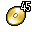 | TM 45 | 1 | 0.001% |
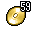 | TM 59 | 1 | 0.001% |